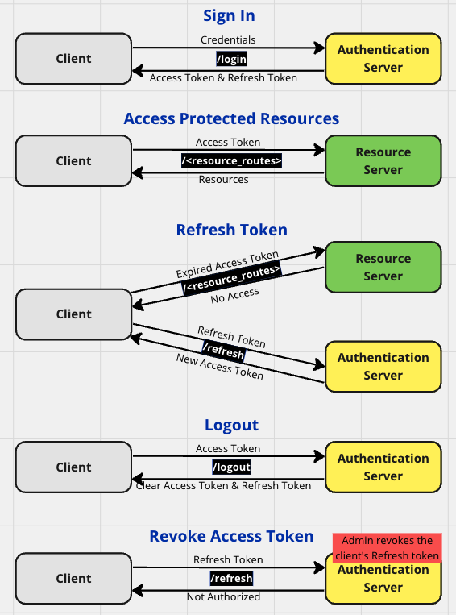

Updated ( 2023-02-13 / 2024-03-22 )
Never expired Access token
- we issue an access token what never expires (we need to have a mechanism to revoke the token)
Expring Access token
- the user needs to re-authenticate when the token expires (lives between the current session to a couple of weeks)
Access token & Refresh token
- the Access token lives between a few hours to a few weeks (depending security requirements)
- the Refresh token is kept by the Authentication Server, getting a new Access token happens without any user action
- talking to the Authentication server happens on the back channel (highly sercure), talking to the Resoruce server happens on the front channel (less sercure)
